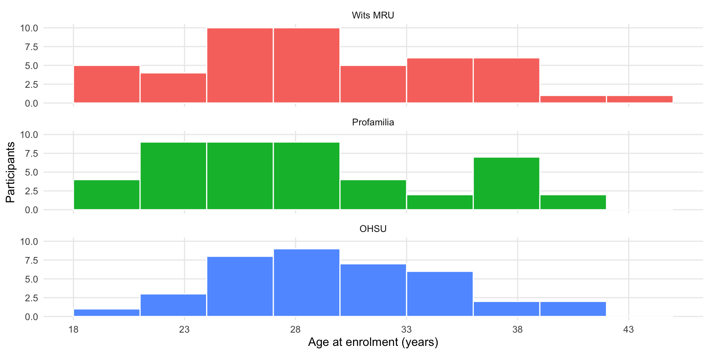
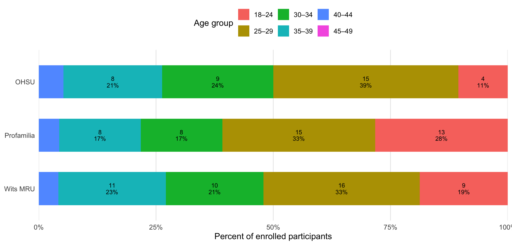
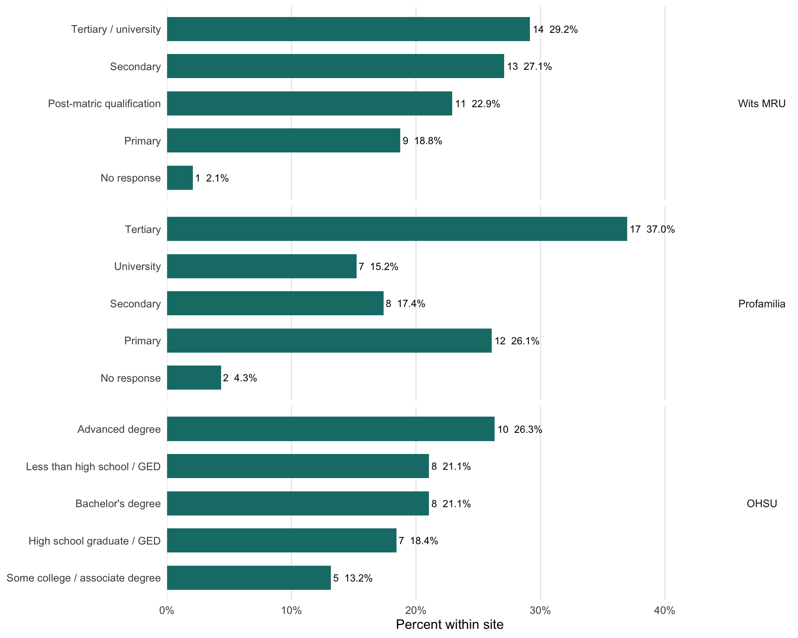
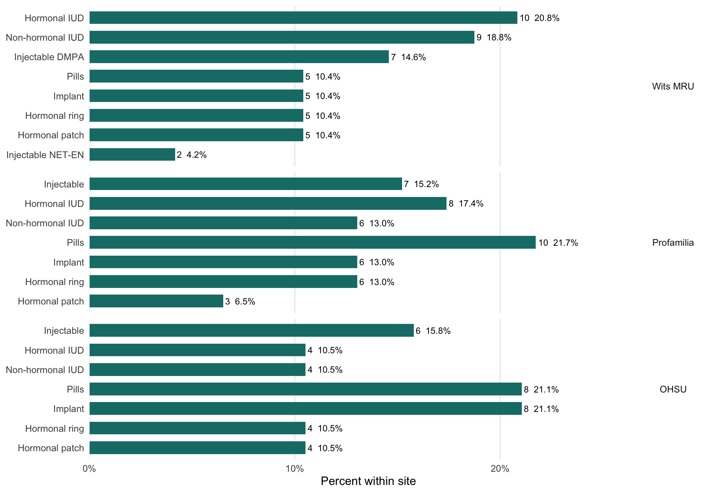
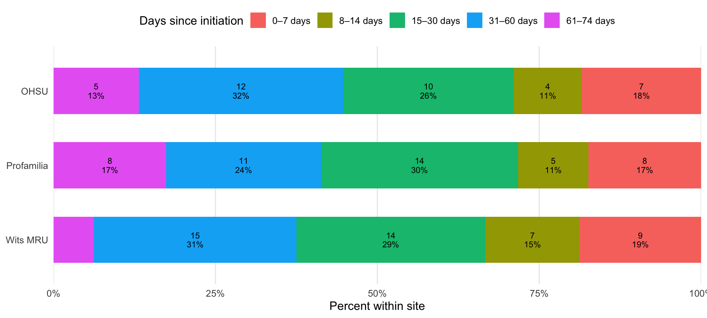
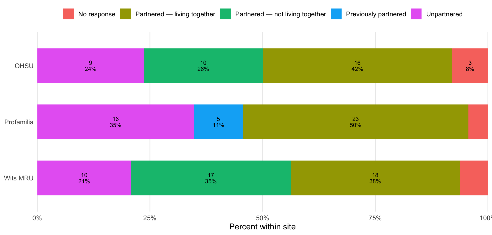
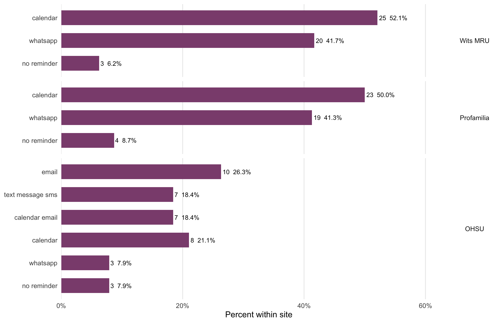
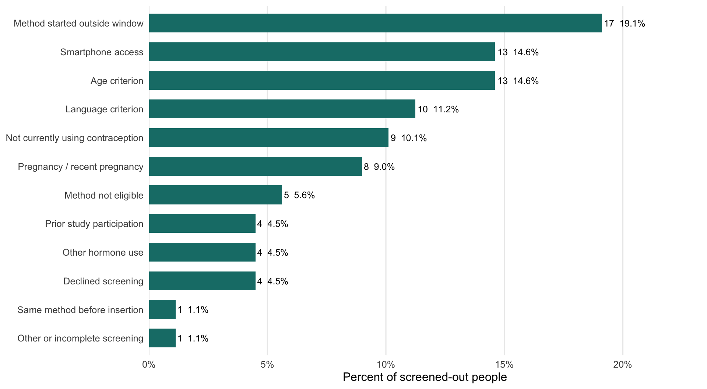

2 Study profile and demographics
Enrolled cohort characteristics
This page describes the people who completed the enrolment and sociodemographic form. Percentages use enrolled participants as their denominator unless a site-specific denominator is shown. These are descriptive distributions, not evidence that recruitment is representative of a wider population.
What. This page describes who has enrolled, including age, education, contraceptive method, relationship status and reminder preferences.
How. Each enrolled participant contributes one record. Site panels retain site-specific wording where the forms are not directly equivalent, while a small number of clearly defined variables are harmonised for comparison.
Why. The distributions help the team understand the cohort being followed, identify site imbalances, and judge how cautiously pooled study-level summaries should be interpreted.
Enrolled cohort
132
3 sites
Median age
29 years
18 to 43
Contraceptive methods
9
Grouped method categories
Median initiation recency
26 days
At enrolment
2.1 Age distribution
What it shows. The first chart preserves exact age; the second groups ages to compare site composition.
How it is calculated. Age-group boundaries and labels come from dashboard_config.yml, and every enrolled participant remains in the denominator.
Why it helps. It shows both the detailed age distribution and whether sites are enrolling meaningfully different age profiles.

2.2 Education
What it shows. Education responses within each site.
How it is calculated. Categories are retained exactly because the three site versions differ, and percentages use enrolled participants at that site.
Why it helps. It describes the cohort without forcing unlike qualifications into a potentially misleading common hierarchy.

2.3 Contraceptive method at enrolment
What it shows. The contraceptive methods represented within each study site.
How it is calculated. Each participant is counted once using the method recorded at enrolment.
Why it helps. Method mix may influence bleeding and pain patterns, so large site differences matter when interpreting pooled outcomes.

2.4 Time since contraceptive initiation at enrolment
What it shows. How recently the contraceptive was initiated when each participant enrolled.
How it is calculated. The recorded start date is subtracted from enrolment date and grouped using configured time bands.
Why it helps. Follow-up experiences may differ by time since initiation, and the chart also exposes records outside the configured 74-day eligibility window.

2.5 Partner status
The forms use different site-specific wording. For monitoring only, responses are harmonised into broad living-arrangement categories; the original response fields remain available in the source CSV.

2.6 Reminder preferences
Because daily reminders permit multiple selections, combinations are shown as reported rather than split into percentages that would exceed 100%.

2.7 Recruitment exclusions
This final distribution is based on screened people who were not eligible. Reasons are mutually exclusive in the dummy data so totals can be interpreted directly; a production export may require a prespecified hierarchy when several criteria fail.

2.8 Interpretation notes
- Demographic charts use one row per enrolled participant.
- Site-specific education and partner questions are not assumed to be perfectly equivalent.
- “No response” is retained rather than silently excluded from denominators.
- The dummy data are designed to exercise the dashboard and do not represent expected study prevalence.